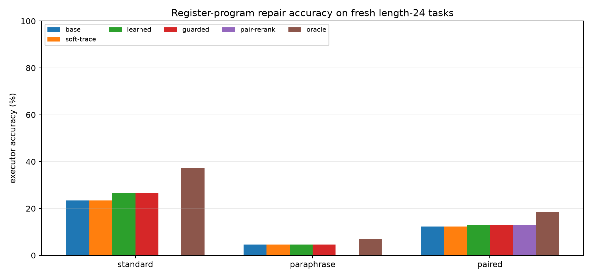
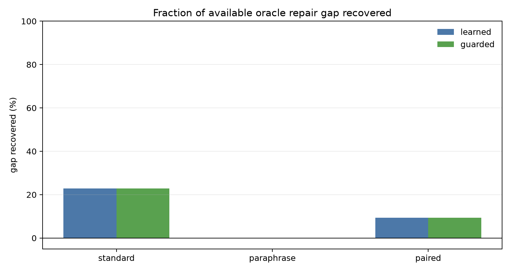
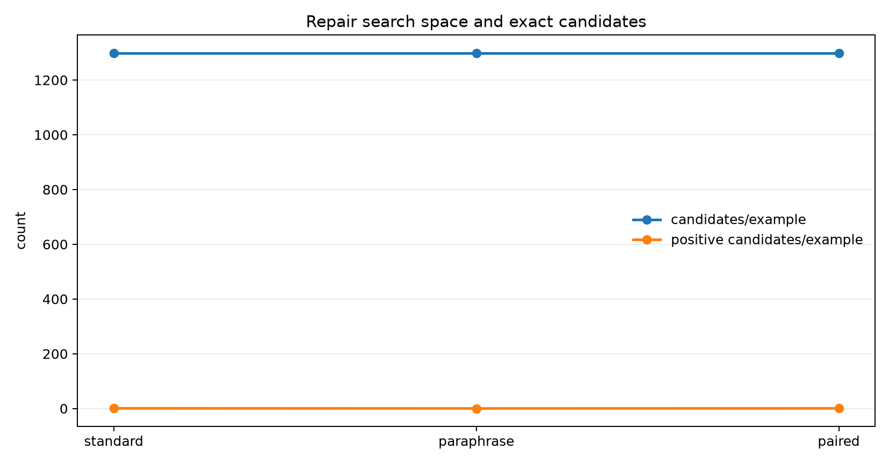

This experiment tests a latent-program repair loop for a Qwen3-4B register compiler. A fixed compiler reads a text prompt and emits a register program for modular arithmetic. A deterministic runtime executes the program. The new component enumerates local register-program edits and trains a verifier to select a better candidate from each local repair set without seeing the target answer or target trace at evaluation time.
On fresh length-24 programs, the learned guarded refiner improves standard-prompt execution accuracy from 23.4% to 26.6%, with an oracle upper bound of 37.1% inside the same candidate set. It does not improve paraphrase accuracy, where the oracle itself reaches only 7.0%. On paired standard/paraphrase evaluation, the refiner improves 12.3% to 12.9%, with an 18.6% oracle ceiling.
Each example is a length-24 chain of operations modulo 97. A fixed Qwen3-4B register compiler emits one initial-value register and operation/argument registers for each step. The refiner searches local edits around the argmax program. Top-3 alternatives with up to two edits create 1,299 candidates per example.
A small transformer scores candidate execution traces plus summary features. Training labels are produced offline by exact execution against the target trace. At evaluation time, the verifier sees only candidate features and traces. A validation-tuned guard keeps the base program unless the learned candidate beats it by a score margin of 0.25.
| split | base | learned/guarded | oracle |
|---|---|---|---|
| train_len24 | 14.8% | 16.6% | 21.9% |
| val_len24 | 15.6% | 17.2% | 20.3% |
| fresh_standard_len24 | 23.4% | 26.6% | 37.1% |
| fresh_paraphrase_len24 | 4.7% | 4.7% | 7.0% |
| fresh_paired_len24 | 12.3% | 12.9% | 18.6% |



Local repair is a real but narrow lever. The learned refiner recovers 22.9% of the available oracle gap on fresh standard length-24 programs. Paraphrase robustness is not solved because the correct repair is rarely present in the searched candidate set. Selection also remains hard on standard prompts: the oracle reaches 37.1%, while the learned guarded selector reaches 26.6%.
The next step is to widen the repair distribution without brute-force explosion: use a learned proposal policy over suspect slots, add three-edit candidates around low-confidence prefixes, and train the verifier/editor jointly on base-wrong repairable cases.